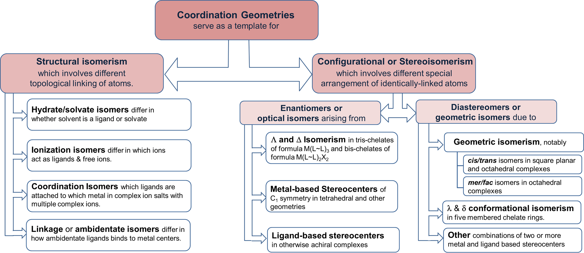
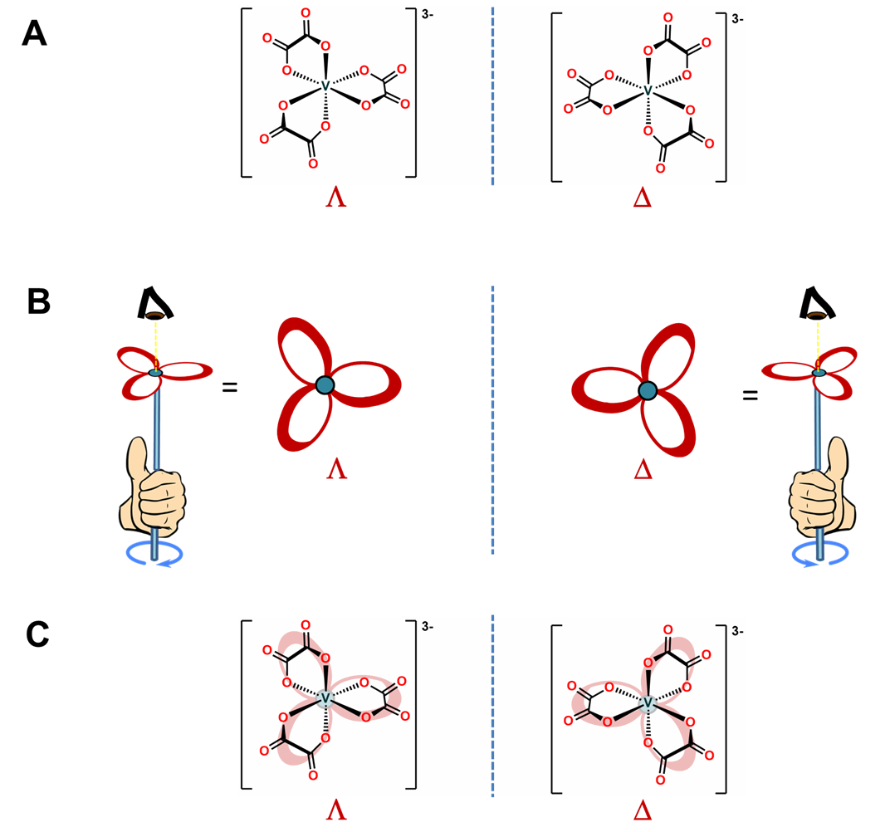

Isomerism essentials
- Structural isomers differ by connectivity.
- Stereoisomers differ by spatial arrangement.
- Geometric: cis/trans (square planar, octahedral), fac/mer (octahedral).
- Optical: Lambda/Delta in tris-chelates and bis-chelates.
Figure 9.4.1 - Isomerism Map
Lambda/Delta primer

Geometric
cis/trans
Identify the isomer
Use the 3D model and the formula to classify the isomer.
3D model
Rotate to inspect ligand positions.
Streak
0
Accuracy
0%
Questions
0